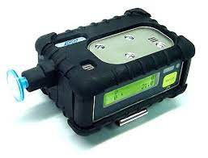

Brian Lightheart Occupational Safety Portfolio
Skills

- Risk Assessment: Identifying potential hazards and assessing their likelihood and severity in the workplace.
- Hazard Identification and Mitigation: Recognizing various types of hazards and implementing effective controls to minimize risks.
- Safety Compliance: Understanding and adhering to relevant occupational health and safety regulations, standards, and best practices.
- Incident Investigation: Conducting thorough investigations into workplace incidents, accidents, or near misses to determine root causes and prevent recurrence.
- Safety Training and Education: Developing and delivering training programs to educate employees on safety procedures, protocols, and practices.
- Emergency Preparedness and Response: Developing emergency response plans, conducting drills, and coordinating responses to workplace emergencies such as fires, chemical spills, or medical incidents.
- Ergonomics Assessment: Assessing ergonomic factors in the workplace to optimize workstation design and prevent musculoskeletal disorders.
- Industrial Hygiene Monitoring: Conducting air quality assessments, noise monitoring, and exposure assessments to protect workers from occupational health hazards.
Throughout attaining my degree in Occupational Safety I have acquired the following skills:

- Job Safety Analysis (JSA): Analyzing job tasks and identifying potential hazards to develop safe work procedures and protocols.
- Safety Management Systems (SMS): Implementing and maintaining comprehensive safety management systems to continually improve safety performance within an organization.
- Behavior-Based Safety: Implementing programs to promote safe behaviors among employees and foster a positive safety culture.
- Safety Auditing and Inspection: Conducting regular audits and inspections to identify safety deficiencies and ensure compliance with safety regulations and standards.
- Incident Reporting and Recordkeeping: Establishing systems for reporting and recording workplace incidents, injuries, and illnesses for regulatory compliance and continuous improvement.
- Communication and Collaboration: Effectively communicating safety policies, procedures, and initiatives across all levels of an organization and collaborating with stakeholders to achieve safety goals.
- Crisis Management: Developing contingency plans and protocols to manage crises and unforeseen events that may impact workplace safety.